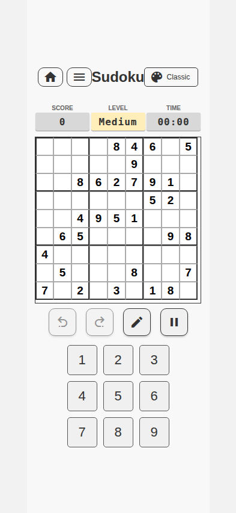
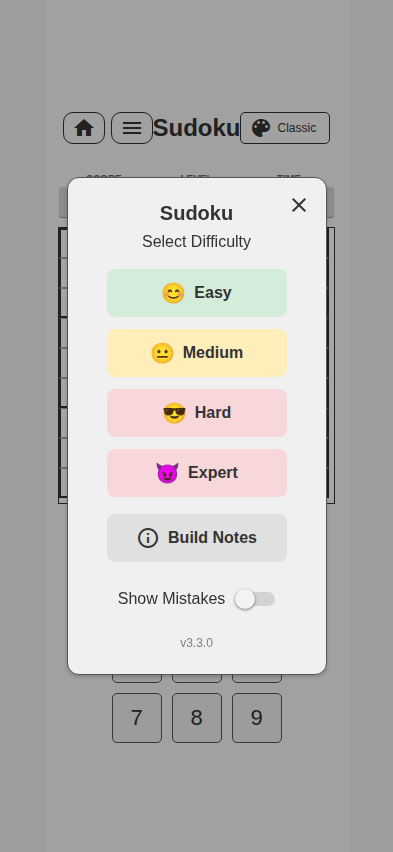
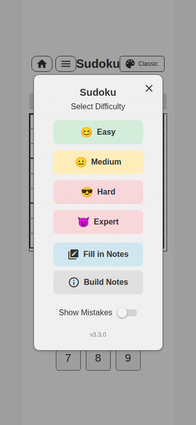

Current functionality, controls and states · redesign inventory

Main Sudoku screen.

Difficulty sheet shown on first entry.
Generated Medium board.
| Visible area | Information/function |
|---|---|
| Header | Back to games, game menu, “Sudoku”, and app theme control with current theme name. |
| Status row | Score, level and elapsed time. |
| Board | 9×9 cells with given values, editable values, selection, peer highlighting and 3×3 boundaries. |
| Tool row | Notes/pencil mode, undo, redo and eraser. |
| Number pad | Digits 1–9 for the selected cell. |
| Control | What it does | Availability / state |
|---|---|---|
| Back to games | Leaves Sudoku and returns to the hub. | Always in header; current game is saved. |
| Game menu | Opens difficulty, Build Notes and mistake-feedback options. | Always in header. |
| Theme | Cycles/chooses among Classic, Dark, Pastel, Sunset, Sunrise, Ocean and Twilight. | Header; selected theme affects the broader app. |
| Board cell | Selects the destination for a digit/note; visual emphasis relates row, column and box. | Given cells cannot be edited. |
| Notes | Toggles candidate-note entry rather than final-value entry. | Applies to subsequent number taps. |
| Undo / Redo | Moves backward/forward through the edit history. | Disabled at the ends of history. |
| Erase | Clears the selected editable cell or its notes. | Needs an editable selection/content. |
| 1–9 | Writes a final digit or toggles a candidate according to Notes mode. | Needs an editable cell selection. |
| Difficulty choices | Starts a fresh generated puzzle at the chosen level. | Easy, Medium, Hard, Expert. |
| Show Mistakes | Controls immediate correctness feedback. | Menu setting. |
| Build Notes | Shows operator-facing release notes for the installed app version. | Menu action. |

Game menu over the live board.